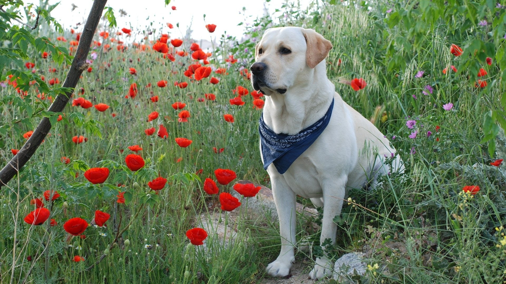
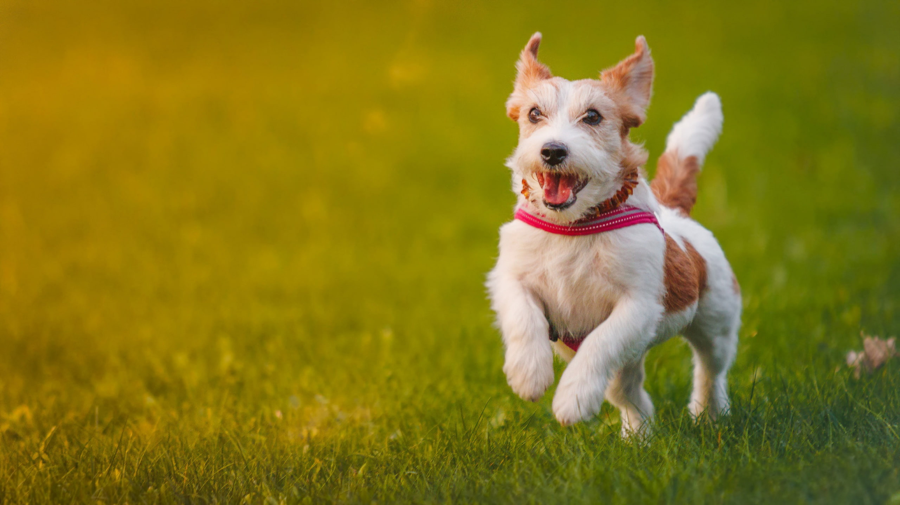

Nuestros collares GPS brindan una capa adicional de seguridad para tus seres queridos, mascotas o activos
valiosos. Saber siempre su ubicación te da tranquilidad en todo momento.

Localización en Tiempo Real
Nuestro servicio ofrece localización en tiempo real, lo que significa que puedes rastrear y encontrar a
quienes más importan instantáneamente, sin importar dónde se encuentren.

Prevención de Pérdidas
: Los collares GPS son ideales para evitar la pérdida de mascotas o pertenencias. Si tu mascota se escapa o
un objeto valioso se extravía, puedes localizarlos rápidamente y recuperarlos.
Servicios
Rastreo GPS
Rastrea a tu mascota en todo momento através de tu celular o computadora, estando en la calle, oficina o en
cualquier sitio.
Puedes configurar desde tu App que está disponible en tu PlayStore de Google o en tu AppStore de IOS, una
cerca
perimetral para que cuando tu mascota salga del límite establecido recibas una alerta.
Desarrollamos una App en donde puedes guardar todos los datos de tu mascota en caso de extravío, para que
quien
lo encuentre pueda comunicarse contigo e incluso compartir ubicación en el momento.
nuestro servicio de collares GPS ofrece una solución efectiva para rastrear y proteger lo que más
te importa.
Ya sea para garantizar la seguridad de tus seres queridos, tus mascotas o tus activos, nuestra tecnología
confiable y fácil de usar te brinda la tranquilidad que necesitas en un mundo en constante movimiento.
Rutas e Historial de Ubicaciones
Con nuestro servicio, puedes acceder a las rutas recorridas y el historial de
ubicaciones, lo que es útil para
planificar rutas seguras o revisar patrones de movimiento.
Geocercas y Notificaciones
Nuestros collares GPS son fáciles de usar y compatibles con una variedad de dispositivos. La
instalación es
sencilla, y puedes acceder a la información desde tu teléfono o computadora.
Compatibilidad y Facilidad de Uso
Configura geocercas virtuales y recibe notificaciones en tiempo real cuando un collar GPS
entre o salga de
áreas específicas. Esto es ideal para la seguridad de tus hijos o el monitoreo de tus activos.
Diversidad de Aplicaciones
Nuestro servicio es versátil y se adapta a diversas necesidades, desde el cuidado de mascotas
hasta la gestión
de flotas comerciales. Es una solución confiable para una amplia gama de situaciones.
Nosotros
Visión y Misión
"Ser el referente global en la protección y bienestar de las mascotas a través
de
tecnología de vanguardia. Nuestra visión es que todas las mascotas gocen de seguridad y libertad mientras
exploran el mundo, y que sus dueños tengan paz mental."
Ubicación
Contáctanos
Actualmente nos encontramos perfeccionando nuestro producto para que tengas siempre disponibles nuestros Servicios,
cada día pensamos en el bienestar de nuestras mascotas, por lo que entre todos haremos una aplicacion dedicada a nuestras mascotas.
Conversemos para resolver todas tus inquitudes a cerca del funcionamiento y tarifas de nuesytos distintos Servicios
que sin duda se van a ajustar t us necesidades.